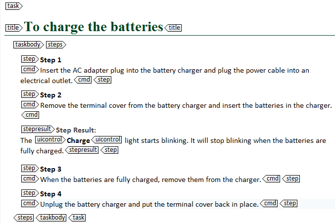
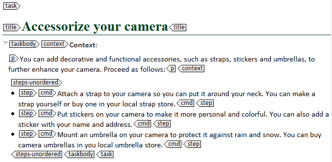

---
# Generated from DITA source
layout: default
title: "Defining the type of procedure: <steps> and <steps-unordered>"
index: "../toc.html"
---
Defining the type of procedure: <steps> and <steps-unordered>
DITA distinguishes procedures with ordered steps and procedures with unordered steps. To indicate which type of procedure you are describing in a particular task, you have to insert the <steps> or <steps-unordered> element in your task topic. Each task topic has to include one of both elements.
<steps>
You use the <steps> element for procedures with steps that have to be executed in a particular order (ordered steps). To reflect that order, the steps in a <steps> element are usually rendered in the output as a numbered list. Try to use ordered steps as much as possible: they guide users better then unordered steps.

<steps-unordered>
The <steps-unordered> element is created for procedures with unordered steps that can be executed in a random order or for which the order may vary from one situation to another (unordered steps). By default, unordered steps are rendered in the output as a bulleted list. Avoid using unordered steps where possible. In most cases, you can use ordered steps. If you need a bulleted list, use the element <ul> (unordered list).
